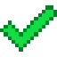
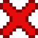

Стабильные релизы
Поддержка Лаунчера принята в:
 Dahlia
• Приложение теперь требует платную учетную запись, иначе установка игровых файлов запрещена в лаунчере.• Добавлено большинство языков
• VGPU и все варианты GL4ES 1.1.5 были удалены с лаунчера.
• GL4ES 1.1.4 был заменён кастомным форком, добавляя много функций и исправлений багов
• Управление было переработано и улучшено и задержка управления теперь покадровое.
• Выбор цвета для управления был изменен
• Добавлены профили! Теперь вы можете хранить несколько вариантов игры с разными выбранными рендерами, JVM, и файлами игры. • Java 17 теперь интегрирована в лаунчер для запуска 1.17+
• Добавлены новые настройки:
"Использовать альтернативный визуализатор", активирует другой метод рендеринга для его ускорения на некоторых устройствах.
"Запуск с виртуальной мышью", автоматически включает мышь при запуске игры
"Включить режим стабилизации производительности", ограничивает использование ЦП/ГП во избежание перегрева и троттлинга
• Добавлена поддержка плащей Arc Capes (изменено на cosmetica.gg)
Исправления ошибок:
• Исправлен сбой при старте записи экрана
• Исправлен сбой NullPointerException при запуске версий ниже 1.6.4
• Исправлен сбой при прокрутке на версиях выше 1.13
• 1.13/1.14 больше не вылетают при первом нажатии
• Исправлено открытие старых версий не в полноэкранном режиме
• Исправлено освещение сущностей на старых версиях
• Исправлена невосприимчивость хотбара к нажатиям 0-9
• Исправлена ошибка null array при загрузке пользовательского управления на Android 10+
• Теперь можно изменять размер окна при открытии в разделённом/оконном режиме (хотя полная поддержка не гарантируется)
 Crocus (v3_openjdk)
• Новые опции:- полноценный установщик модификаций
—————— • Новые возможности:
- Java 8 работает быстрее.
- Возможность запускать 1.13 и выше.
- Корректная работа Forge и Fabric! Чтобы установить загрузчик модов, просто запустите установку его .jar-файла.
- Поддержка нескольких архитектур: ARMv7, aarch64, x86 и x86_64.
-
—————— • Что нового - Java 17 для запуска версий Minecraft выше 21w10a.
- Переработка управления: добавлены новые функции (такие как разворачиваемые кнопки) и расширен редактор
(имейте ввиду, что раскладки управления из прежних версий перестанут работать). - Новые визуализаторы: virgl и vgpu (хоть VirGL и поддерживает функции OpenGL 4.5, он не может запускать наборы шейдеров корректно). - Удалён zink. - После того, что случилось с Doregon/PojavLauncher_iOS, были реализованы локальные учётные записи. К сожалению, теперь вы не сможете загружать ресурсы Minecraft без лицензии, вообще
Beta-версии
Только для олдов :)
▶ v2.5 - последний релиз Beta
• Примечание: установщик OptiFine экспериментален, на некоторых устройствах будут возникать сбои на этапе загрузки ресурсов (экран с логотипом Mojang). Не сообщайте нам о сбоях OptiFine при загрузке, это нерешаемо.• Новые настройки:
- Настройка длительности удерживания для срабатывания жестов (размещение и ломание блока).
• Новые возможности:
- Прокрутка при удерживании экрана и нажатии ПКМ в Minecraft 1.8 и выше.
▶ Релиз v2.4.2
• Хорошие новости: любое устройство с Android 7.0+ теперь способно нормально запускать Minecraft.• Изменения:
- Добавлен установщик OptiFine!
- Добавлена поддержка внешней мыши и клавиатуры (требуется Android 8.0+, , пока не перехватываются события нажатия левой/правой кнопки).
- Улучшена адаптация интерфейса лаунчера под большие экраны.
- Поддержка оконного режима.
- Виртуальная мышь теперь работает корректно.
- multdoj7 заменён на PojavDX (dx 1.16) для улучшения конвертации (спасибо artdeell за идею).
• Исправления:
- Событие касания срабатывает как событие нажатия, было проблемой ещё аж со времён Boardwalk.
- В игре: вращение камерой вызывает срабатывание мыши.
▶ Релиз v2.4
• Помните: если на вашем устройстве Android 7.0 или выше, используйте приложение VMOS. Он установит Android 5.1 на ваше устройство. Это можно использовать для запуска лаунчера (VMOS был удалён из Play Store, придётся устанавливать вручную).• Изменения:
- Удалены OpenJDK и busybox.
- Возвращены нативные библиотеки для 64-битных ARM.
• Исправления:
- Исправлена невозможность запустить игру без подключения к интернету.
▶ Релиз v2.3.1
• Изменения:- Добавлено выделение текста в журнале установки OpenJDK.
• Исправления:
- Невозможно установить OpenJDK, но возможно скрыть ошибку.
▶ Релизы v2.2/v2.3
• Что нового:- Небольшие изменения в функции обновления. - Добавлен busybox.
- Добавлен OpenJDK для конвертации (только для 64-битных ARM).
- Добавлено больше функций AWT.
- Снимки экрана (и клавиша F2) теперь работают через внутренние API (javax.imageio).
▶ Релиз v2.1
• Изменения:- Добавлен список изменений!
- Сторонние версии теперь отображаются в списке (но только для разработчиков :3)
- Обновление из приложения теперь работает.
- glshim заменён на GL4ES для улучшения производительности и частичной поддержки OpenGL 2.0.
▶ Релиз v2
• Изменения:- [Частично] Новый дизайн (как в официальном Minecraft Launcher из 2017).
- Изменена схема загрузки/сохранения пользователей.
- Добавлено меню с дополнительными опциями.
- Добавлена виртуальная мышь в стиле компьютерного курсора.
• Исправления:
- Отрицательный прогресс при конвертации.
- Ошибка проверки ресурсов некоторых версий (патч клиента)
Релизы Alpha
Старые добрые времена.
▶ v1.0.4 (lost everything before release)
- Добавлена опция загрузки версии.- Добавлена виртуальная мышь (лучше, чем после переработки в 2.0)
▶ v1.0.1-v1.0.3 Alpha
• Изменения:- Добавлены 1.2.5, 1.7.2, 1.7.10, 1.8, 1.9 (заранее собранные версии).
- Добавлены кнопки Tab, снимка экрана и принудительного закрытия.
▶ v1.0 Alpha
• Первый релиз. Назван как Minecraft Launcher• Добавлена только заранее собранная версия 1.9.